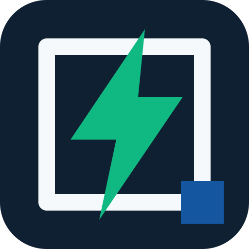

GIAE Chile sin conexion
La app local puede seguir abriendo la base instalada. Algunas funciones necesitan haber sido cargadas antes o recuperar conexion para actualizar datos.
Vuelve a conectarte y recarga GIAE para sincronizar la version mas reciente.